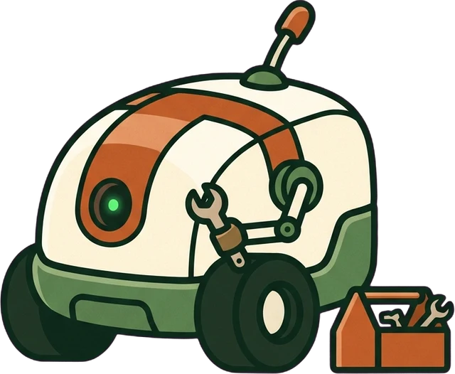

Accueil › Guides › Dépannage
Mon robot tondeuse ne charge plus : que faire ?

Dépannage · 4 minutes · mis à jour le 15 novembre
Nettoyez d’abord les contacts de charge avec un chiffon sec. Le plus souvent, la batterie n’y est pour rien.

Comment nettoyer les contacts de charge ?
Le robot rentre à sa station des dizaines de fois par saison, les lamelles de cuivre couvertes d’herbe humide. Une pellicule verte se forme et le courant ne passe plus.
Frottez les deux lamelles du robot et celles de la station avec un chiffon sec, puis avec le côté vert d’une éponge si elles restent ternes. Reposez le robot : le voyant doit passer au vert fixe en moins d’une minute.
La station est-elle bien alimentée ?
Regardez le voyant de la station. Éteint, le problème vient de la prise ou du transformateur, qui passe l’hiver dehors et n’aime pas l’eau stagnante. Branchez une lampe sur la même prise pour trancher.
Quand faut-il changer la batterie ?
Une batterie de robot tient 4 à 6 ans. Elle arrive en fin de vie quand le robot rentre se charger au bout de 20 minutes au lieu d’une heure. Comptez 80 à 160 € selon le modèle, et dix minutes avec un tournevis.
Robot en fin de vie ?
Les modèles dont la batterie et les lames se changent sans passer par l’atelier.